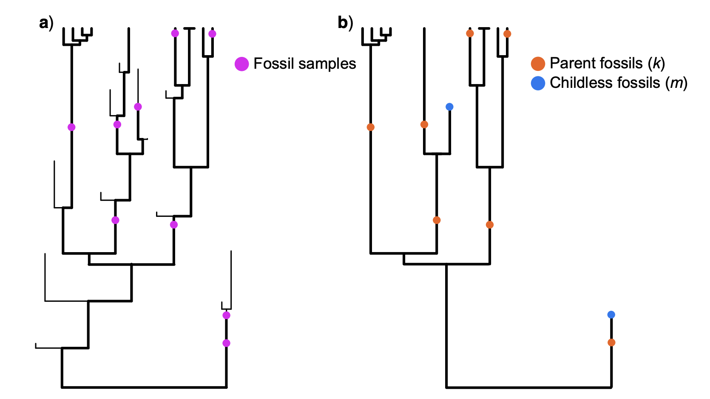
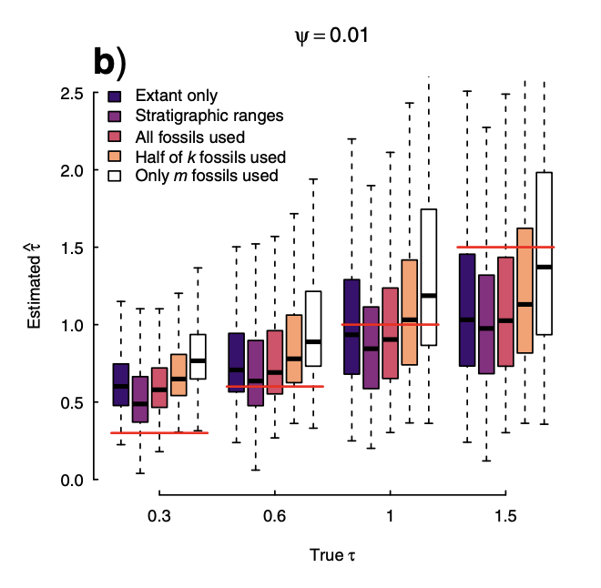

Jeremy Beaulieu and I have a paper in Systematic Biology on the impact of fossils on estimating diversification rates. There has been a lot of interest in the fossilized birth-death process, FBD (Stadler 2010), and with the rediscovery in the field that diversification methods might be telling tales signifying nothing, Jeremy and I thought about how the FBD might help. We know fossils help, a lot, with things like ancestral state reconstruction and dating trees: knowing about fossils might help with diversification processes (especially with parameters relating to extinction).
Jeremy implemented it in hisse. One thing we discussed in the implementation is how there are two kinds of fossils FBD uses:

One is terminals that are fossils with no sampled descendants (‘m’ type). The other is parent fossils (‘k’ type): they have a sampled descendant on the tree (which could be a fossil or extant tip). We worried that the methods assume equal probability of sampling for all these fossils, but that empiricists might not be generating data that meet these assumptions. For example, one might put a single T. rex fossil specimen on the tree, but would one put on every individual? All but the most recent one would be parent fossils, and we suspected they could be missing.
We made predictions based on the math, but it’s also useful to test with simulations. Simulations can be tricky when testing models: all models are simplifications of the world that can fail if the world is complex in the wrong ways. One can always write “method X fails under real world conditions Y” if conditions are extreme enough, but that doesn’t necessarily mean that it will fail in everyday use. So in setting up our simulations for this study, we chose to make it biased towards FBD working and based on realistic parameters. One way we biased it was including mass extinctions: methods using only tip data should do terribly for that, and fossils might help.
The key result is in Figure 4:

Using just the extant tips (dark purple) performed better than using extant tips and fossil tips (white bars) and similarly to using all the fossils, which based on limited data (see our Figure 3) is rarely done empirically. This surprised us: we were expecting fossils to pretty clearly help except when there was a bias to only use tip fossils. It is frankly a little disappointing that even perfect fossil data (we assumed fossil positions were known exactly, for example) does not help noticeably with estimating diversification models (though they remain important for dating, for ancestral state reconstruction, and likely for tree inference, as well).
To see all the code we used, go to https://github.com/thej022214/Fossils_impact_BO .
To see how to use fossils in hisse, including in models with and without traits, look at Jeremy’s vignette: https://speciationextinction.info/articles/adding_fossils.html . Based on our analysis, fossils don’t help much with diversification, but you can prove us wrong for your data, and you can use these tools for things like looking at correlations where fossils might indeed help.
To subscribe, go to https://brianomeara.info/blog.xml in an RSS reader.
Citation
@online{o'meara2023,
author = {O’Meara, Brian},
title = {Fossils Do Not Help Fix Diversification Parameter Estimates},
date = {2023-04-22},
url = {https://brianomeara.info/posts/fossilsdonothelp/},
langid = {en}
}